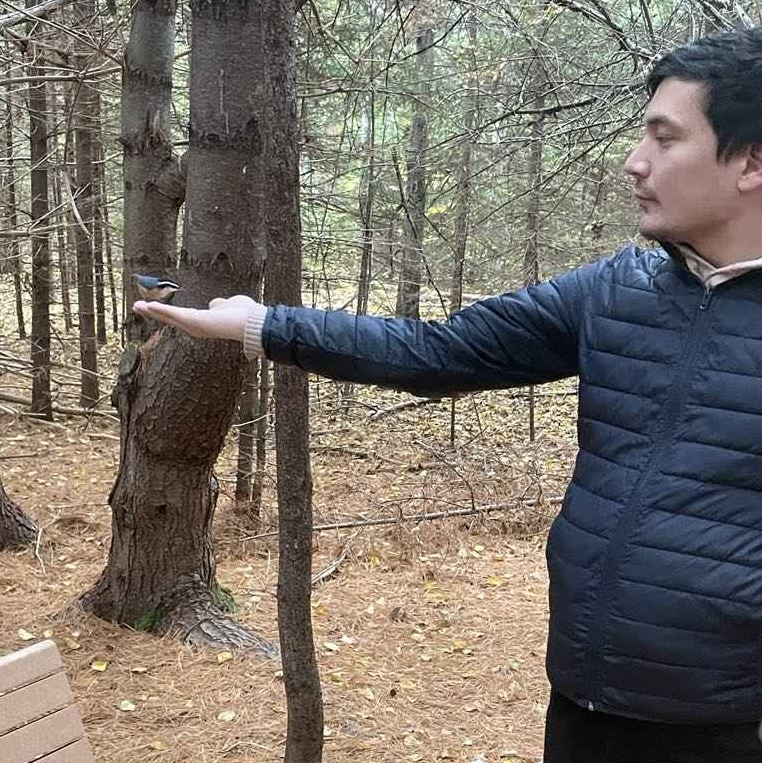

I'm Tristan Kolla!
I’m a passionate math enthusiast transitioning into the realm of theoretical ecology. I graduated from Concordia University with a BSc in pure and applied mathematics. Currently, I’m pursuing my master’s degree in biology in Dr. Pedersen’s lab. I love exploring the connections between math and biology, and I’m excited to see how these two disciplines can collaborate to reveal new insights about our ecosystems! My research focuses on understanding how variation in dispersal response can stabilize spatially structured food webs. Outside of my studies, you can catch me bird watching or testing out the latest board games!
Feel free to contact me at tristankolla@gmail.com – I'd love to connect!

Me birding at Daly Point Nature Reserve. That’s a red-breasted nuthatch on my hand—how cool is that?!